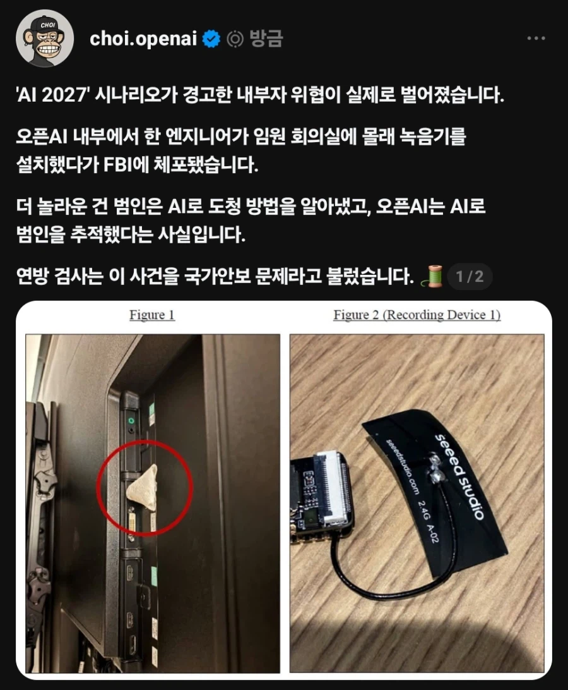

직원이 챗지피티로 도청기를 만들어서 임원 회의실을 도청
그걸 챗지피티로 범인 추적해서 알아냄

직원이 챗지피티로 도청기를 만들어서 임원 회의실을 도청
그걸 챗지피티로 범인 추적해서 알아냄
기초적인 임플란트도 없군
조니 실버핸드가 보내는 인사다
??? : 씨발 뭔 개소리야
내부 gpt면 gpt에 물어본 모든 내용 검열가능한거 아님?
검열까진 아니더라도 기록은 싹다하지 그리고 gpt에게 물어보면 알려주지 ㅋㅋㅋ
지금 AI 개발사 본진에선 사용자 출신 국적따라 접근 권한도 따로 관리하고있기 때문에 아마 저거 FBI에 넘겨져서 취조 당하고 있을지도
기록 확인이 기술적으로 가능한거랑 실질적으로 가능한건 많이 다르니까
저거 소형esp32에 패치안테나 붙여놓은건가
ㅇㅇ seeed studio Xiao sens 인듯 마이크 카메라도있는 상용 개발모델 외장안테나도들어있음
저거 못보고 깔고앉아서 핀이 엉덩이에 박혔었는데 강제 임플란트수술당함
ㅋㅋㅋㅋ개웃기네 저거 핀달아놓으면 은근공간많이차지하고 핀튀어나와있어서 불편하긴하더라 아두이노의 철학이보였음
용의자 국적이 중국인가
https://www.washingtonpost.com/technology/2026/10/13/fbi-arrests-openai-employee-allegedly-planting-bug-office/
Abdulrahman Alfozan 사우디 국적이라네
사우디아라비안이라고본듯


??? : GPT야 사용자 대화 기록을 저장하고 들여다 보진 않지?
GPT : 다 저장하고 다 들여다 봅니다.
??? : 그래 잘하자
아니라고도 안하노
AI가 거짓말을...?
터미네이티드 당함
지문 생활패턴 자리비운 시간 평소 검색어 등등 돌리면 금방 나올듯
근데 임원 회의 내용을 알아도 치명적인 정보가 유출되었다고 보기에는 어렵지 않나
가중치 통으로 빼가는거나 학습데이터 훔치는거면 몰라도
회의내용 추측해보면 학습 방향이나 이런거나 오고 갈 것 같은데
상사같이 막 어디랑 얼마로 딜한다 이런정보도 아니고 그렇다고 가중치나 학습데이터를 처음부터 끝까지 말하지도 않을텐데 ㅋㅋ
저 choi 저놈 다 좋은데 호들갑 그만 쳐떨었으면함
이제는 정나미 떨어질지경임
gpt에 올라가는 입력토큰이 얼마나 되는데 그걸 다 보는건 아닐테고 위험한것들은 따로 분류하는거겠지?
??? : 몸대주러온 걸레인가보지